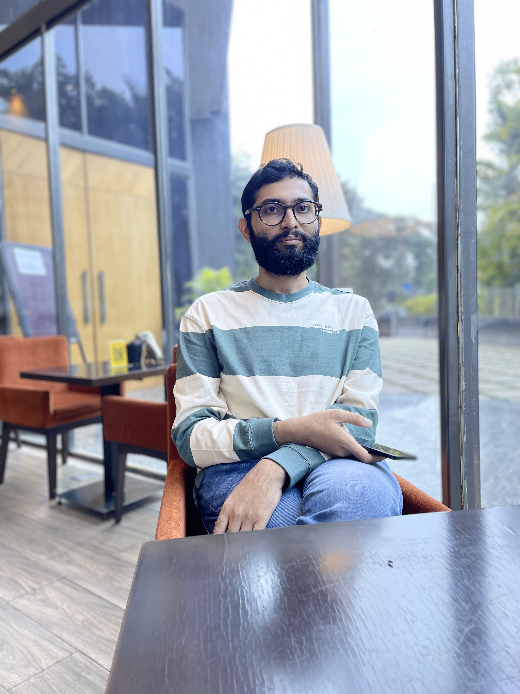
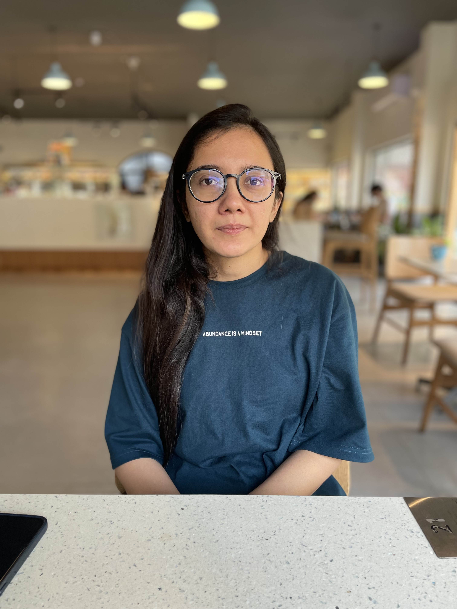

Maxent is new, but our team isn’t. Here’s some of our past work.

Bharath, boasting over 8 years in Product Development and AI Engineering, is a trailblazer in high-impact projects,
process optimization, and team leadership.
He has left an indelible mark at BetterUp, Elemendar, Glib.ai, Tera Economics and Analytics Lab, mcg.ai and more.
His expertise spans mental health, cybersecurity, banking, insurance, fintech, and AI research. Specializing in AI solution
development, product strategy, and driving product-led growth, Bharath recently spearheaded the development of BetterUp's AI platform.
His strategic enhancements to UX and pioneering retention strategies for a one of BetterUp’s B2B product resulted in substantial savings exceeding $4 million.

Rita, a dynamic leader with over 7 years of expertise in AI engineering and product analytics, has been instrumental at renowned
organizations such as BetterUp, Microsoft, Cision, Elemendar and more. Specializing in product analytics, conversational AI, NLP solution development, she has consistently delivered measurable results across diverse domains, including mental health, cybersecurity, banking, insurance & fintech.
She guides organizations in shaping their growth strategy through her profound analytics skills, leaving a lasting impact on engagement and other growth initiatives. Her collaborative approach has propels companies toward sustained growth.